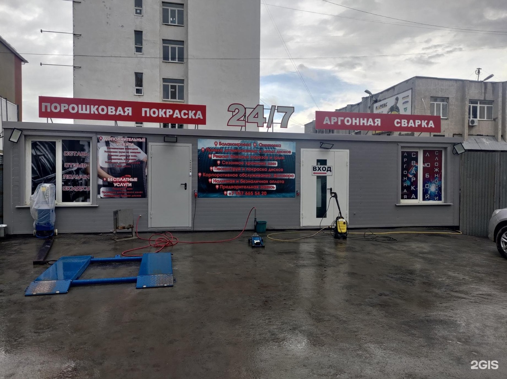

2ГИС
Оценок: 216 · Отзывов: 171
Открыть отзывыПроверено 14.11.2026Самара / Советский район
Шиномонтаж и хранение шин, а также развал-схождение и ремонт ходовой части.
автосервис, сход-развал
+7‒927‒617‒17‒37Уточните часы по телефону
СТО: пн-сб 9:00-20:00

Для вашего автомобиля
Найдите нужную работу или позвоните, чтобы обсудить ваш вопрос.
Цена за 4 колеса. В стоимость входит: мойка колес, хранение до следующего сезона.
от 2700 ₽ / 4 колеса
50 ₽
100 ₽
10 ₽
100 ₽
150 ₽
200 ₽
120 ₽
140 ₽
160 ₽
60 ₽
80 ₽
100 ₽
120 ₽
180 ₽
210 ₽
от 100 ₽
от 150 ₽
от 200 ₽
Цена за 1 колесо
100 ₽ / 1 колесо
Цена за 1 колесо
100 ₽ / 1 колесо
Цена за 1 колесо
150 ₽ / 1 колесо
от 100 ₽
Цена за 1 колесо
от 200 ₽ / 1 колесо
от 11000 ₽
Цена за 4 колеса
2640–4680 ₽ / 4 колеса
Цена за 4 колеса
1800–3000 ₽ / 4 колеса
Цена за 4 колеса
3000–5280 ₽ / 4 колеса
Цена за 4 колеса
от 5880 ₽ / 4 колеса
от 3720 ₽ / 4 колеса
от 3720 ₽ / 4 колеса
от 5000 ₽
Цена за 4 колеса. В стоимость входит: мойка колес, хранение до следующего сезона.
от 1500 ₽ / 4 колеса
8-927-207-83-71
от 200 ₽
от 900 ₽
от 1400 ₽
Цена за 1 шип
25 ₽ / 1 шип
от 1000 ₽
от 1400 ₽
200 ₽
300 ₽
500 ₽
500 ₽
400 ₽
от 1000 ₽
от 1700 ₽
от 500 ₽
от 500 ₽
от 400 ₽
Уточняйте по телефону
Уточняйте по телефону
Уточняйте по телефону
Уточняйте по телефону
Уточняйте по телефону
Уточняйте по телефону
Уточняйте по телефону
Уточняйте по телефону
Уточняйте по телефону
Уточняйте по телефону
Уточняйте по телефону
Уточняйте по телефону
Уточняйте по телефону
По этому запросу услуг не найдено. Попробуйте другое название или позвоните в мастерскую.
Дата прайса в источнике: 2026-09-29. Стоимость и состав работ уточняйте по телефону. Цены приведены с условиями источника и не являются публичной офертой.
Опыт посетителей
Рейтинги площадок и пересказы отзывов. Полные тексты доступны по ссылкам.
Посетитель жалуется на расхождение согласованной по телефону и итоговой стоимости шиномонтажа.
Читать на картахВ отзыве положительно оценивается помощь мастера в сложной ситуации.
Читать на картахБудем на связи
| Понедельник | 00:00–24:00 |
|---|---|
| Вторник | 00:00–24:00 |
| Среда | 00:00–24:00 |
| Четверг | 00:00–24:00 |
| Пятница | 00:00–24:00 |
| Суббота | 00:00–24:00 |
| Воскресенье | 00:00–24:00 |
СТО: пн-сб 9:00-20:00
Часы в праздники уточняйте по телефону.
Карта © OpenStreetMap
Открыть карточку и маршрутРасскажите, что нужно автомобилю. Уточните стоимость и время для визита.